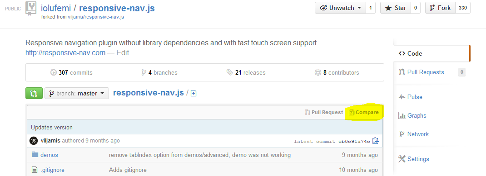
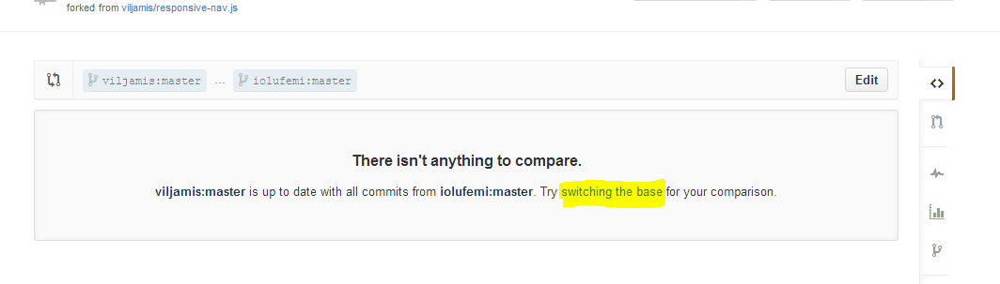
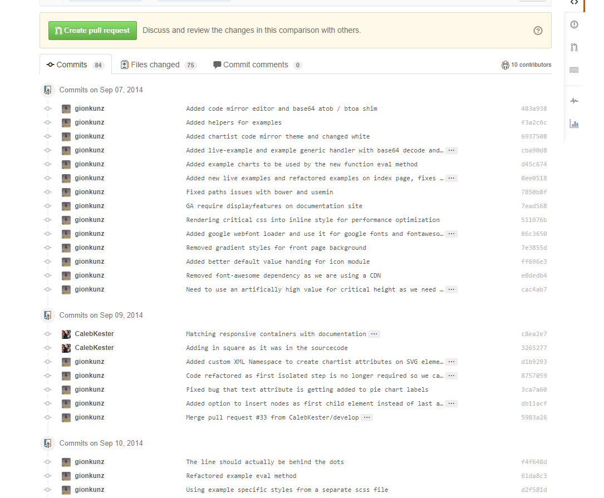

How can I keep my fork in sync without adding a separate remote?
Let's assume there is a repository someone/foobar on GitHub, which I forked
to me/foobar.
How do I pull new commits from the parent repository directly to my fork , without having to add a separate remote and remember to pull regularly from there ?
The goal is to:
-
git pullto fetch from the parent repository -
git pushto send everything to my fork
Answer
Open the forked Git repository me/foobar.
Click on Compare :

You will get the notification:
There isn't anything to compare.
someone:master is up to date with all commits from me:master. Try switching the base for your comparison.
Click on switching the base on this page:

Then you get to see all the commits made to someone/foobar after the day you forked it.
Click on Create pull request :

Give the pull request a title and maybe a description and click Create pull request.
On the next page, scroll to the bottom of the page and click Merge pull request and Confirm merge.
Your Git repository me/foobar will be updated.
Edit: rebase options are shown here:

Suggest
git remote set-url origin git@github.com:someone/foobar git remote set-url origin --push git@github.com:me/foobar
There is one caveat though:
This is perfect if you are the only one making changes to your fork.
However, if it is shared with other people, you may have to pull from your
fork, in which case a separate remote is the only solution.
Edit:
Actually, you can git pull git@github.com:me/foobar, which removes the
caveat.
The choice is yours as to which is easier to remember.